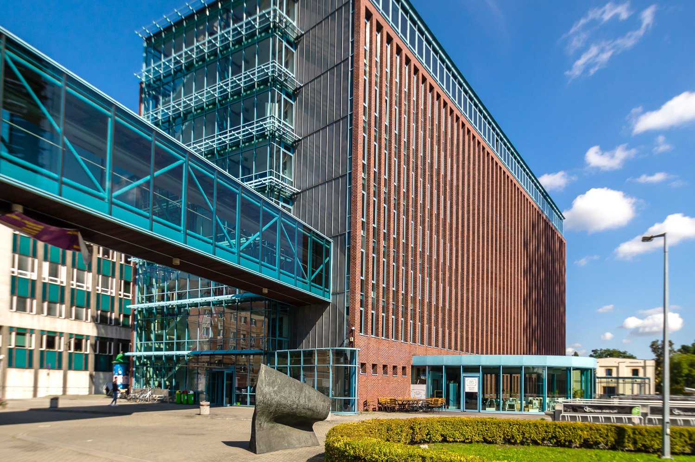

Nauczanie na tym kierunku koncentruje się na poznawaniu i zrozumieniu mechanizmów rządzących powstawaniem i przebiegiem zjawisk i procesów ekonomicznych charakterystycznych dla współczesnej gospodarki rynkowej, ujmowanej tak w makro- i mikroskali, poszczególnych rynków, jak i w przekroju krajowym i międzynarodowym. Kierunek stwarza możliwość poznania i zrozumienia różnych aspektów działalności gospodarczej, metod i technik prowadzenia analiz ekonomicznych i finansowych, a także interakcji zachodzących między sferą finansową a sferą realną gospodarki.
Kierunek łączy aspekty prawne, ekonomiczne i organizacyjno-zarządcze funkcjonowania administracji. Wyróżnikiem kierunku jest dostarczanie Studentom wiedzy i umiejętności niezbędnych do skutecznego i profesjonalnego wykonywania zadań, jakie zostały postawione przed współczesną administracją zarówno publiczną, jak i prywatną. Dlatego oferta programowa odzwierciedla interdyscyplinarność zagadnień i złożoność administracji, wymagającej od swych kadr znajomości zagadnień prawnych, finansowych, organizacyjnych itd.
Nauczanie na tym kierunku koncentruje się na poznawaniu i zrozumieniu mechanizmów rządzących powstawaniem i przebiegiem zjawisk i procesów ekonomicznych charakterystycznych dla współczesnej gospodarki rynkowej, ujmowanej tak w makro- i mikroskali, poszczególnych rynków, jak i w przekroju krajowym i międzynarodowym. Kierunek stwarza możliwość poznania i zrozumienia różnych aspektów działalności gospodarczej, metod i technik prowadzenia analiz ekonomicznych i finansowych, a także interakcji zachodzących między sferą finansową a sferą realną gospodarki.Nauczanie na tym kierunku koncentruje się na poznawaniu i zrozumieniu mechanizmów rządzących powstawaniem i przebiegiem zjawisk i procesów ekonomicznych charakterystycznych dla współczesnej gospodarki rynkowej, ujmowanej tak w makro- i mikroskali, poszczególnych rynków, jak i w przekroju krajowym i międzynarodowym. Kierunek stwarza możliwość poznania i zrozumienia różnych aspektów działalności gospodarczej, metod i technik prowadzenia analiz ekonomicznych i finansowych, a także interakcji zachodzących między sferą finansową a sferą realną gospodarki.